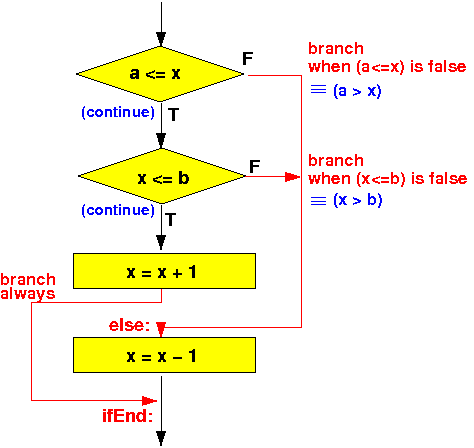

Compound boolean expressions use
|
Example:
if (a <= x && x <= b)
x = x + 1;
else
x = x - 1;
|
Compilers use the short-circuit boolean evaluation technique to translate compound boolean expressions
The short-circuit boolean evaluation for the AND clause is based on the following:
condition1 && condition2: If condition1 = false then Outcome ≡ false // Outcome can be computed // with only ONE condition If condition1 = true then Outcome ≡ condition2 |
We can construct a program flow for a compound && boolean expression using the above short-circuit boolean evaluation technique
The short circuit boolean evaluation will result in the following flow chart:
if ( cond1 && cond2 ) -----> |
statement1(s); V
else +--------------+ FALSE
statement2(s); | eval cond1 |-----------------+
+--------------+ |
| TRUE |
V |
+--------------+ FALSE |
| eval cond2 |------------+ |
+--------------+ | |
| TRUE | |
V | |
statement1(s) (then) | |
| | |
+<--------+ | |
| (else) | |
| statement2(s) <-----------+----+
| |
+-------->+
|
V
|
Example && condition:
int x, y, a;
if (a <= x && x <= b)
x = x + 1;
else
x = x - 1;
|
As before, I will omit discussing the variable definitions !
(I showed you the variable definitions to give you their data type information !)
if (a <= x && x <= b)
x = x + 1;
else
x = x - 1;
|
The corresponding flow chart is:
|  |
.text
main:
// Test if (a <= x )
movw r0, #:lower16:a
movt r0, #:upper16:a // r0 = addr(a)
ldr r0, [r0] // r0 = a
movw r1, #:lower16:x
movt r1, #:upper16:x // r1 = addr(x)
ldr r1, [r1] // r1 = x
cmp r0, r1 // a <= x ?
bgt else // Branch to "else" if a > x
// test if ( x <= b )
movw r0, #:lower16:x
movt r0, #:upper16:x // r0 = addr(x)
ldr r0, [r0] // r0 = x
movw r1, #:lower16:b
movt r1, #:upper16:b // r1 = addr(b)
ldr r1, [r1] // r1 = b
cmp r0, r1 // x <= b ?
bgt else // Branch to "else" if x > b
then:
// x = x + 1
movw r0, #:lower16:x
movt r0, #:upper16:x // r0 = addr(x)
ldr r1, [r0] // r1 = x
add r1, r1, #1 // r1 = x+1
str r1, [r0] // x = x+1
b ifEnd // ** SKIP over the else part !!! ***
else:
// x = x - 1
movw r0, #:lower16:x
movt r0, #:upper16:x // r0 = addr(x)
ldr r1, [r0] // r1 = x
sub r1, r1, #1 // r1 = x-1
str r1, [r0] // x = x-1
ifEnd:
/* --------------------------------------------------
Begin of the permanent program variables
-------------------------------------------------- */
.data
x: .4byte 15 // Try x outside 10 ... 20
a: .4byte 10
b: .4byte 20
.end
|
DEMO: /home/cs255001/demo/asm/6-if/if-and.s